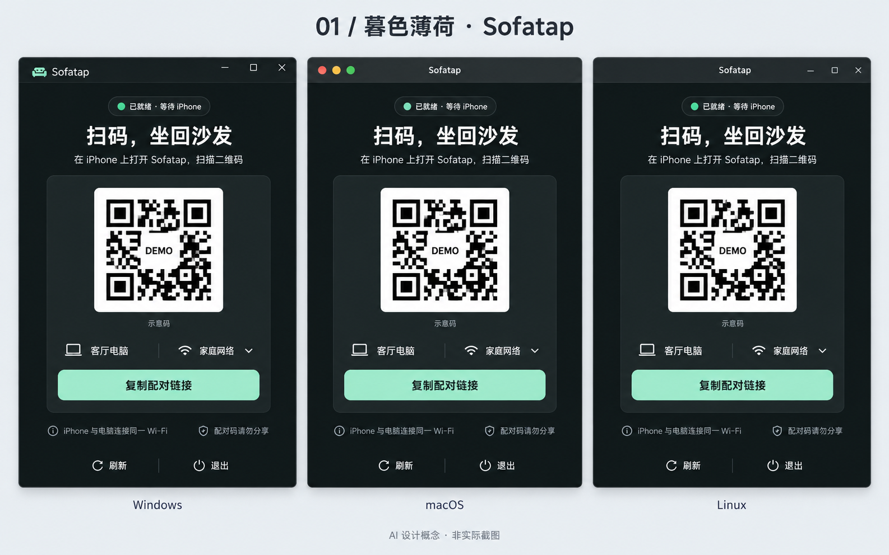
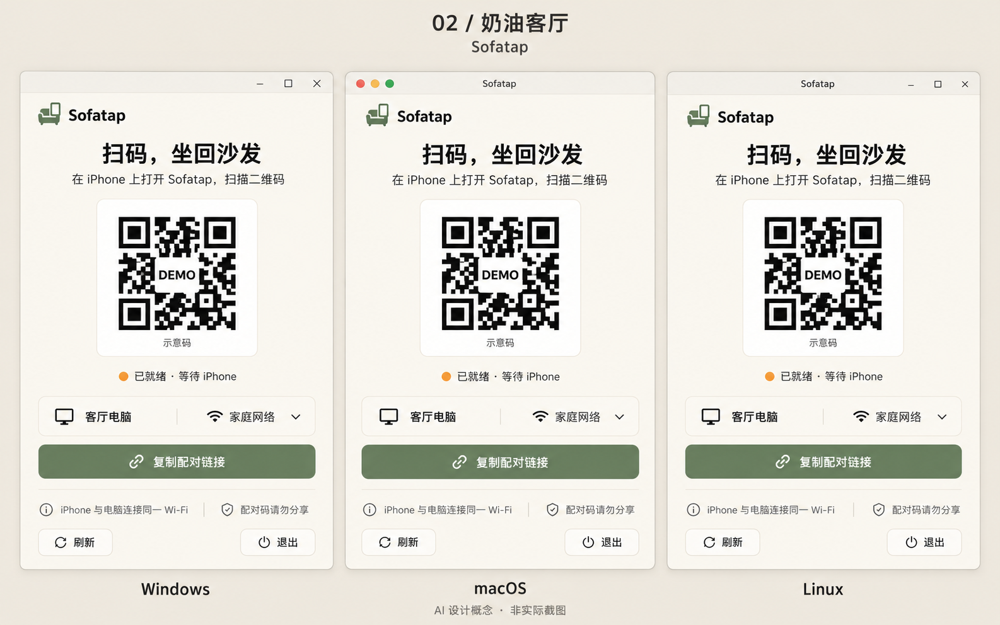
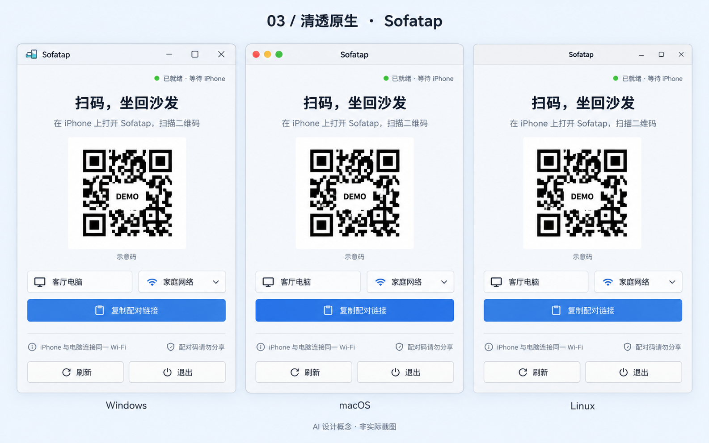
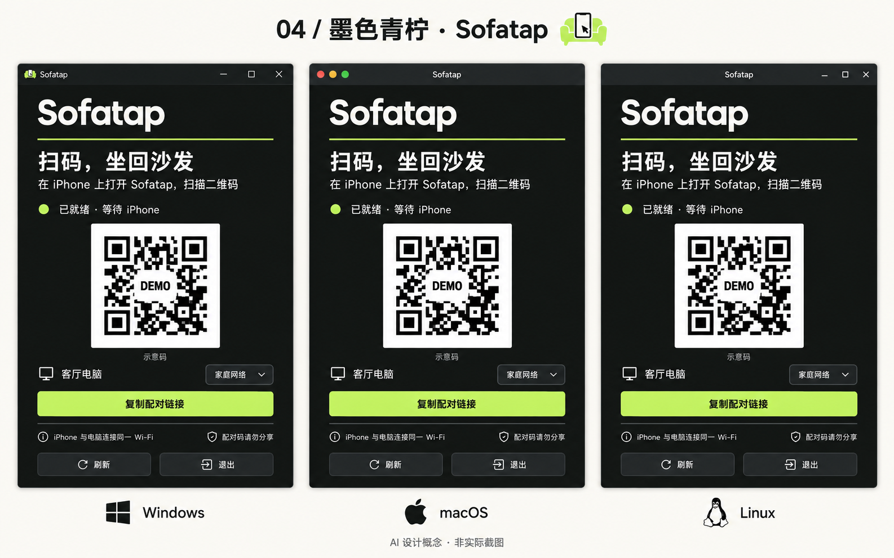
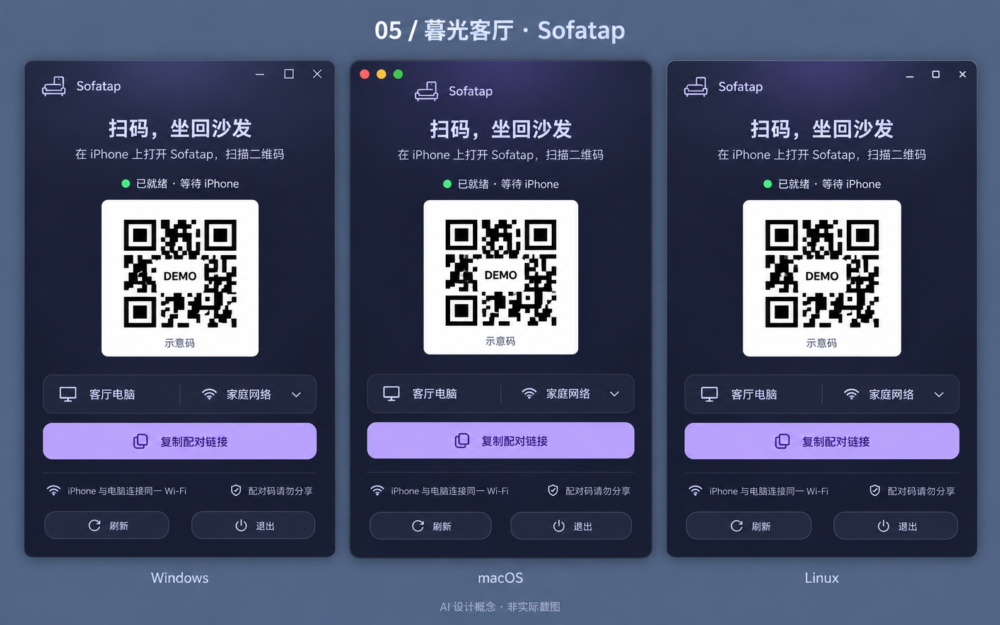

暮色薄荷
柔和深色底，薄荷色只用于关键动作与状态。安静、克制，适合夜间客厅。

奶油客厅
奶油白、亚麻与暖沙色，圆润而轻松。让工具更像家里熟悉的一件小物。

清透原生
明亮背景、清楚的留白与轻量边界。保留各系统窗口习惯，用一致的内容结构连接三端。

墨色青柠
墨黑与青柠绿形成鲜明对比，轮廓更利落。适合希望保留一点游戏设备气质的客厅。

暮光客厅
暮蓝与淡紫营造夜晚的柔和光感。少量氛围色衬托主要操作，让界面更有情绪。

选一个方向，也可以组合优点
可以直接说方案编号，或指定“用 01 的配色，加上 03 的布局”。确认后，统一三端的字体层级、间距、图标、按钮与连接状态，同时保留 Windows、macOS 和 Linux 各自的原生窗口操作习惯。
所有方向都遵守同一原则：接收器在原生窗口里显示二维码，手机扫码连接；配对过程不跳转浏览器。最终文字、权限提示、状态与可访问性需在真实实现中校准。